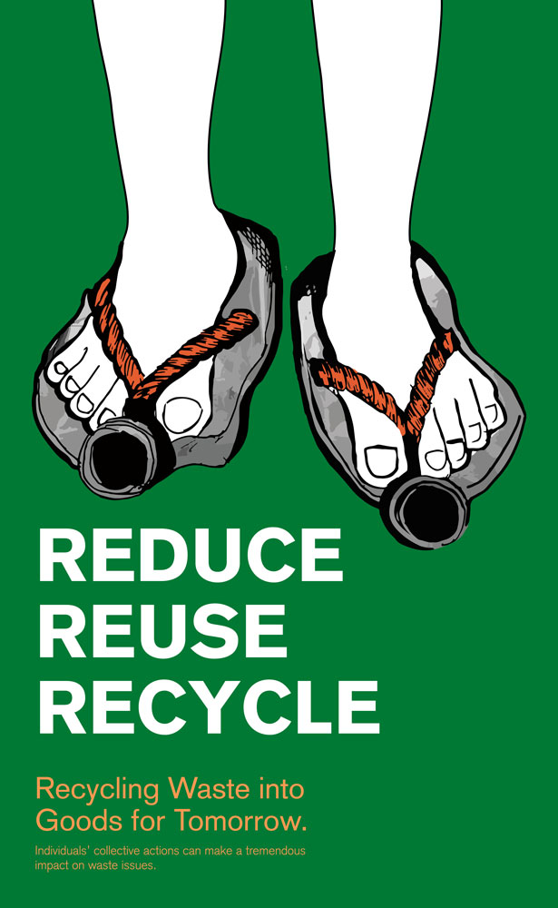
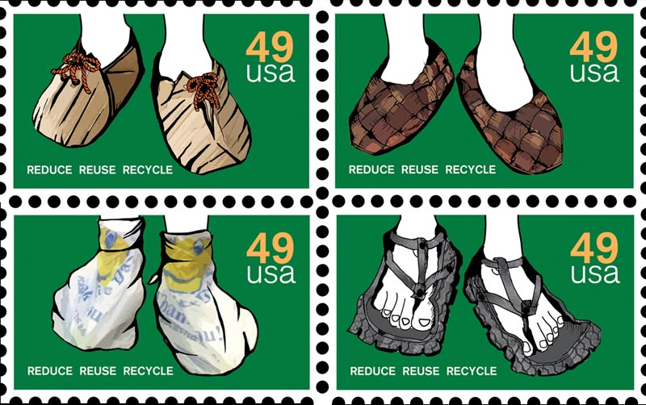
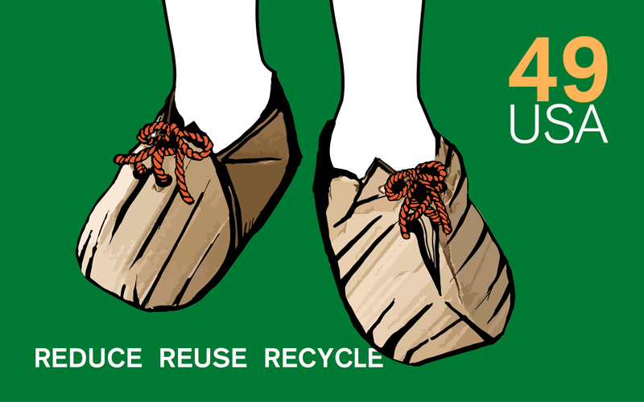
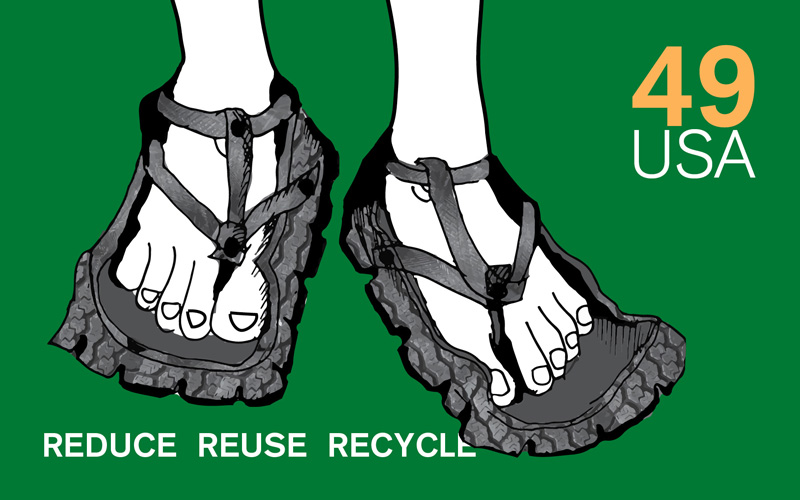
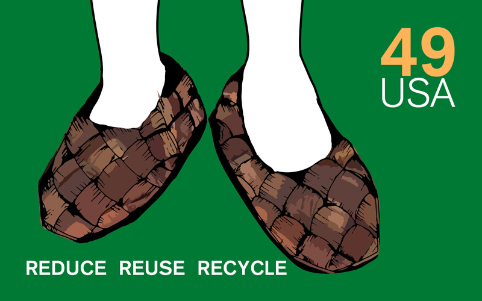
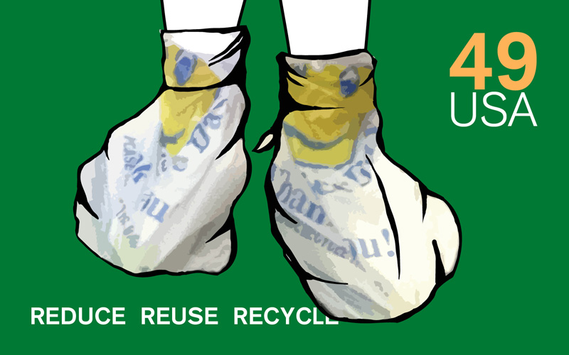

Posters & Postage Stamps






The objective of this assignment is to convey a message that raises awareness and motivates change, concerning sustainability, using topics of water, trees or endangered species.